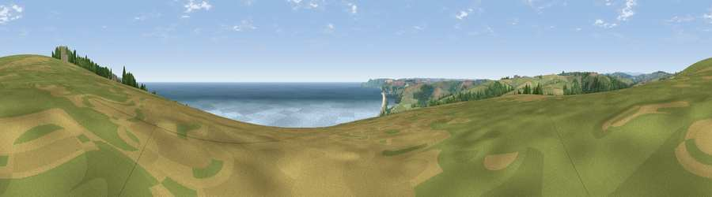

Viewpoint near Strete
#2022 in England · top 5% of its area beats it · near Strete · access?Where it is
The exact computed spot (SX 83375 46275). Click the marker for map links.
Public access: no public right of way or access land is recorded at this exact spot — it may be on private land. Computed from Natural England's CRoW access layer and OpenStreetMap rights of way — not the legal definitive map. Always verify locally.
The view, rendered

A 360° render of this exact spot computed from the terrain model, tree cover and land cover — summer colours, afternoon light, calibrated against photographs of famous viewpoints. Real trees, hedges and buildings will differ in detail.
The panorama
Grey silhouette: terrain skyline in each direction (720 bearings, Earth curvature and refraction included). Dashed green: skyline with trees (+15 m) and buildings (+8 m) as obstacles. Blue strip: how far the ground is visible on each bearing.
Where the view opens
Wedge length = distance to the farthest visible ground on that bearing (vegetation-aware). Rings at 10, 25 and 50 km.
What fills the view
47% water · 32% grassland · 14% cropland · 6% woodland
Angular shares of the visible panorama (visual magnitude), not map area. Landscape diversity 0.52 (0–1 Shannon).
Key numbers
More beautiful places nearby
The staircase of upgrades: each row has a higher view potential than everything closer. Driving times are estimates from straight-line distance, calibrated against real road routing — check an actual route before setting out.
| Place | Direction | Drive | Score |
|---|---|---|---|
| Viewpoint near Dartmouth | NE · 6 km | ~12 min | 79.2 |
| Viewpoint near Kingswear | NE · 6 km | ~12 min | 80.2 |
| Viewpoint near Beesands | SSW · 7 km | ~14 min | 80.9 |
| Viewpoint near Kingswear | ENE · 8 km | ~16 min | 81.7 |
| Viewpoint near Kingswear | ENE · 9 km | ~18 min | 83.8 |
| Viewpoint near East Prawle | SSW · 12 km | ~22 min | 84.6 |
| High Peak | NNE · 48 km | ~69 min | 85.3 |
| Pencarrow Head | W · 68 km | ~91 min | 86.0 |
50.30486, -3.63904 · source: screening · position refined by local search. Computed location — check access rights before visiting.